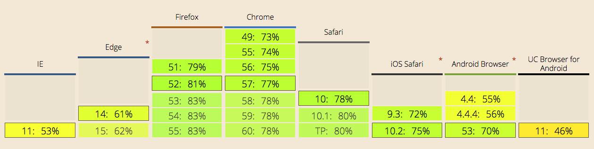
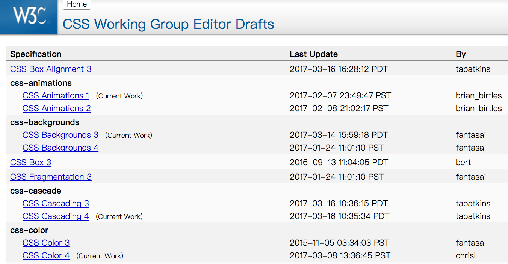
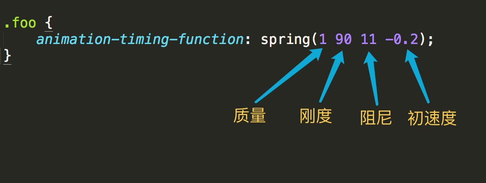
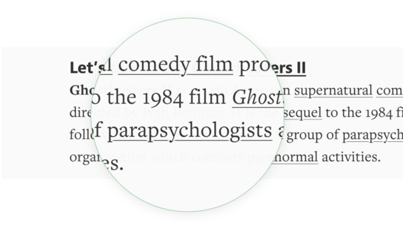
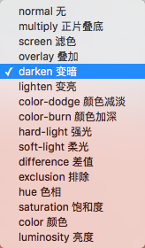
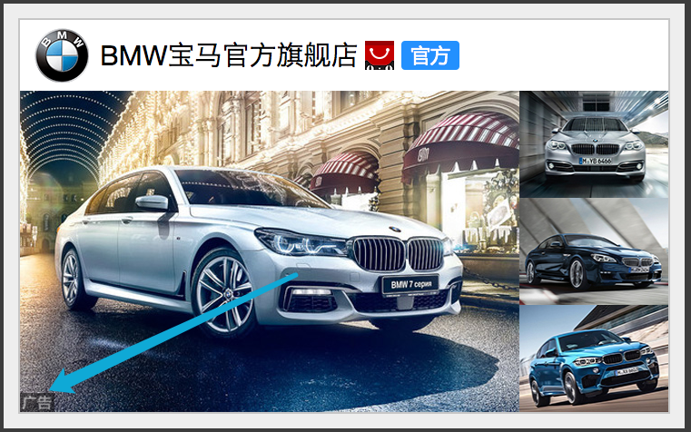

CSS in 2016
壹丝 · 2017-03-21 · 杭州
CSS 20周年
1996.9.17 — 2016.9.17
CSS 3
1999.6.22
Color Profiles, Multi-column, Paged Media
CSS 3 2016 支持情况
Now
100+个模块
W3C 工作组
CSS 现状
- 动画
- 文字排版
- 图片与颜色
- 用户界面
- 布局
动画
Mass(质量), Stiffness(刚度), Damping(阻尼), Initial Velocity(初速度)
弹性动画
See the Pen CSS spring animation demo by percyley by 一丝 (@yisi) on CodePen.
路径动画
.foo {
offset-path: path('m232.771103, 329.79953c-102.829727,...');
}
See the Pen CSS Animate on SVG Path by 一丝 (@yisi) on CodePen.
step animation
See the Pen Twitter heart button animation by 一丝 (@yisi) on CodePen.
step animation

内网送花系统
文字排版
下划线
创意中心(chuangyi.alibaba-inc.com)是史上最强大的创意平台
Medium

Demo
See the Pen Underlines 8: SVG Filters by John D. Jameson (@johndjameson) on CodePen.
text-decoration-skip: objects
下划线
创意中心(chuangyi.alibaba-inc.com)是史上最强大的创意平台
text-underline-position: under
创意中心(chuangyi.alibaba-inc.com)是史上最强大的创意平台
溢出隐藏文字
使用 linear-gradient
header .title:after {
content: '';
position: absolute;
right: 0;
top: 0;
width: 100%;
height: 100%;
background: linear-gradient(to right,
rgba(255, 255, 255, 0), #fff)
no-repeat 14em 0;
background-size: 2.1em 100%;
}
使用 masks
header .title {
mask: linear-gradient(to right,
#fff 14em, rgba(0, 0, 0, 0))
no-repeat;
}
图片与颜色
CSS Masks
See the Pen Applying a CSS and SVG mask by Vincent De Oliveira (@iamvdo) on CodePen.
CSS Mask Demo
clip-path
活动 Demo
See the Pen CSS radar animation by 一丝 (@yisi) on CodePen.
背景混合模式
background-blend-mode
See the Pen CSS Background Blending Modes（CSS背景混合模式）翻译:一丝 by 一丝 (@yisi) on CodePen.
文字裁剪
background-clip: text

See the Pen idea for newsletter by Ed (@ginfuru) on CodePen.
用户界面
box-sizing
- border-box
- content-box
- padding-box?
box-sizing reset
html {
box-sizing: border-box;
}
*, *:before, *:after {
box-sizing: inherit;
}
user-select: none
布局
《CSS 布局大进化》